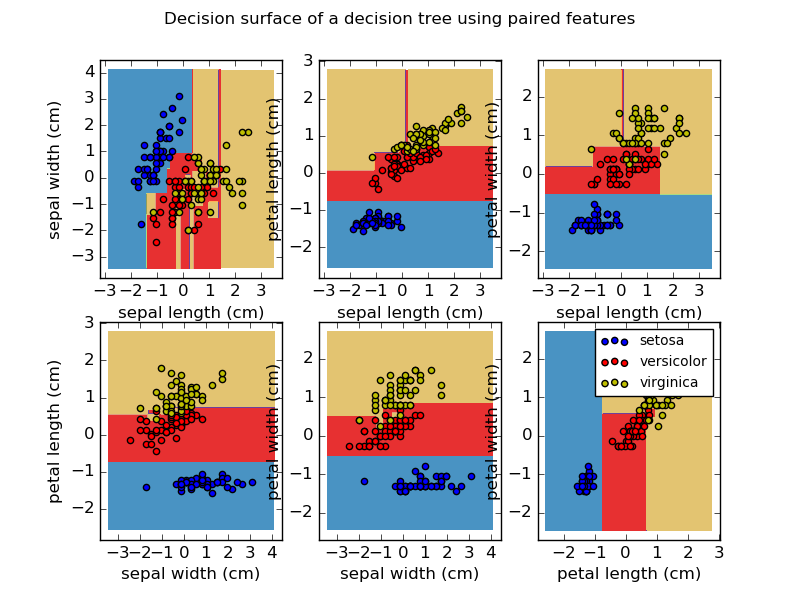

1.10 决策树(Decision Trees)¶
决策树Decision Trees (DTs) 是一类用于分类 和回归的非参数监督学习算法。目标是创建一个模型通过从数据中学习一些简单的 决策规则来预测目标变量的值。
比如在下面的例子中，决策树从数据中学习一系列if-then-else决策规则去逼近一个正弦曲线。树的深度越深，决策规则 越复杂，模型拟合的也越精确。

决策树的优点有以下几个方面：
- 易于理解和解释。树能够被可视化。
- 需要很少的数据准备工作。其他的学习机通常需要数据归一化、虚拟变量创建以及移除空白值(blank values)等预处理操作。 然而，需要注意的是 此模型 不支持 缺失值(missing values)。
- 使用决策树进行数据预测的代价是与训练树所用的数据点的数量呈对数关系的。
- 能够同时处理数值数据(numerical data)和类别数据(categorical data)。其他学习机技术通常被限定于 分析只有一种类型变量的数据集。更多详情请看决策树算法。
- 能够处理多输出问题。
- 使用白盒模型(white box model)。如果某个给定的情形在模型中被观测到了,那么 对于条件的解释可以使用布尔逻辑很轻松的实现。 作为对比, 在黑盒模型(black box model)中 (例如在人工神经网络中), 结果可能非常难于解释。
- 可以使用统计测试来验证模型，这使得我们能够对模型的可靠性(reliability)作出评估。
- 即使当它的某些假设稍微违背了数据集的真实模型，决策树也可以很好的工作。
决策树的缺点有以下几个方面：
- 决策树学习器可能会创造过于复杂的树使得对数据的泛化能力下降。这被称之为过拟合(overfitting)。 有一些机制比如剪枝操作、设置叶节点的最小样本量需求或者限制树的最大深度来避免过拟合发生。
- 数据集中的数据的细微变化可能会导致产生截然不同的树出来，所以决策树存在不稳定性。 解决不稳定性的一种方法是使用集成方法将多个决策树组织起来。
- 学习最优决策树的问题已经被证明是一个NP-完全问题，即使是某些比较简单的情形下获得最优解也非常困难。 因此，能够实际应用的决策树学习算法一般都是基于启发式优化方法的，比如使用贪心算法可以找到一个在叶节点上 进行局部最优决策的决策树。
- 决策树很难学习和表达某些概念比如异或、奇偶校验和多路复用等问题。
- 如果某些类起了主导作用，那么决策树学习器将创建一个有偏树(biased trees)。 因此，强烈建议数据集中各类的先验概率应该做到平衡以便拟合出一个更加平衡的决策树。
1.10.1 分类(Classification)¶
DecisionTreeClassifier 是一个能够执行多类别分类任务的类。就像其他分类器一样，
DecisionTreeClassifier类的成员函数fit接受两个参数：一个是用于存放训练样本的
数组X,X可以是稀疏的或稠密的，其大小为[n_samples, n_features]； 另外一个参数是训练样本的类别
标签数组Y，Y是整型数组，大小为[n_samples]
>>> from sklearn import tree
>>> X = [[0, 0], [1, 1]]
>>> Y = [0, 1]
>>> clf = tree.DecisionTreeClassifier()
>>> clf = clf.fit(X, Y)
当模型拟合好以后，我们就可以用它来预测样本类别了。
>>> clf.predict([[2., 2.]])
array([1])
更进一步，我们还可以获得被预测的样本属于各个类的概率值。此概率值是叶节点上同一类的训练样本的比例分数。
>>> clf.predict_proba([[2., 2.]])
array([[ 0., 1.]])
DecisionTreeClassifier 即能够处理二分类问题(其中的标签只有 -1 和 1 两种);
也能够处理多类分类问题(其中标签集合为 [0, ..., K-1]).
我们可以使用iris数据集按如下的方式构造决策树分类器：
>>> from sklearn.datasets import load_iris
>>> from sklearn import tree
>>> iris = load_iris()
>>> clf = tree.DecisionTreeClassifier()
>>> clf = clf.fit(iris.data, iris.target)
一旦决策树被训练好后，我们可以用export_graphviz将树以 Graphviz 的格式导出。下面的例子展示了如何将 iris数据集上训练得到的树导出来：
>>> from sklearn.externals.six import StringIO
>>> with open("iris.dot", 'w') as f:
... f = tree.export_graphviz(clf, out_file=f)
然后，我们就使用Graphviz的节点工具创建个PDF文件：dot -Tpdf iris.dot -o iris.pdf。
>>> import os
>>> os.unlink('iris.dot')
或者，如果我们安装了Python模块pydot，我们就能够直接在Python中创建pdf文件：
>>> from sklearn.externals.six import StringIO
>>> import pydot
>>> dot_data = StringIO()
>>> tree.export_graphviz(clf, out_file=dot_data)
>>> graph = pydot.graph_from_dot_data(dot_data.getvalue())
>>> graph.write_pdf("iris.pdf")
export_graphviz
也支持各种各样的美化选项，包括带有颜色的类节点，显式变量和类名。
IPython notebooks 也可以在其内部显示这些绘图，通过使用Image() 函数:
>>> from IPython.display import Image
>>> dot_data = StringIO()
>>> tree.export_graphviz(clf, out_file=dot_data,
feature_names=iris.feature_names,
class_names=iris.target_names,
filled=True, rounded=True,
special_characters=True)
>>> graph = pydot.graph_from_dot_data(dot_data.getvalue())
>>> Image(graph.create_png())

当决策树被拟合好以后，就可以用来预测样本类别啦：
>>> clf.predict(iris.data[:1, :])
array([0])
更进一步，我们还可以获得被预测的样本属于各个类的概率值。此概率值是叶节点上同一类的训练样本的比例分数。
>>> clf.predict_proba(iris.data[:1, :])
array([[ 1., 0., 0.]])

1.10.2 回归(Regression)¶

决策树也可以用于解决回归问题，此时要使用DecisionTreeRegressor类。
就像在分类问题中的设置一样，DecisionTreeRegressor类的fit函数也接受
两个参数：X和y。但是，在回归问题中，目标变量y不再是整型的而是浮点型的连续变量。
>>> from sklearn import tree
>>> X = [[0, 0], [2, 2]]
>>> y = [0.5, 2.5]
>>> clf = tree.DecisionTreeRegressor()
>>> clf = clf.fit(X, y)
>>> clf.predict([[1, 1]])
array([ 0.5])
例子:决策树回归应用
1.10.3 多输出问题¶
多输出问题(multi-output problem)也是监督学习问题，它有多个输出需要预测。此时，目标变量Y是一个
大小为[n_samples,n_outputs]的2维数组。
当多个输出之间没有相关性的时候，解决此问题的一个简单办法就是为每一个输出建立一个独立于其他输出的 模型，然后对于每一个输出的预测就可以独立的使用其对应的模型。 然而，很多情况下多个输出变量都依赖于相同的输入变量，这就会导致这些依赖于相同输入的输出变量之间 存在相关性。这时候最好的做法通常是构建单个模型对多个输出进行同时预测。首先，因为我们只建立了一个 单模型，所以需要的训练时间就比较少。其次，单模型估计器的泛化精度通常比较高。
对于决策树来说，这种策略可以很容易地被用来支持多输出的问题。这时候，我们需要做以下改变：
- 在叶子中存储n个输出值，而不是1个;
- 使用分裂准则(splitting criteria)来计算所有n个输出上的平均缩减(average reduction)。
scikit-learn模块在DecisionTreeClassifier类和DecisionTreeRegressor类中
实现了上述策略来支持多输出问题。如果我们在一个大小为[n_samples,n_outputs]的多变量输出数组上拟合了
一个决策树模型，那么产生的估计器模型的输出具有下述特点：
- 函数
predict的输出具有n_output个值;- 函数
predict_proba的输出是一个列表，包含了n_output个类概率数组。